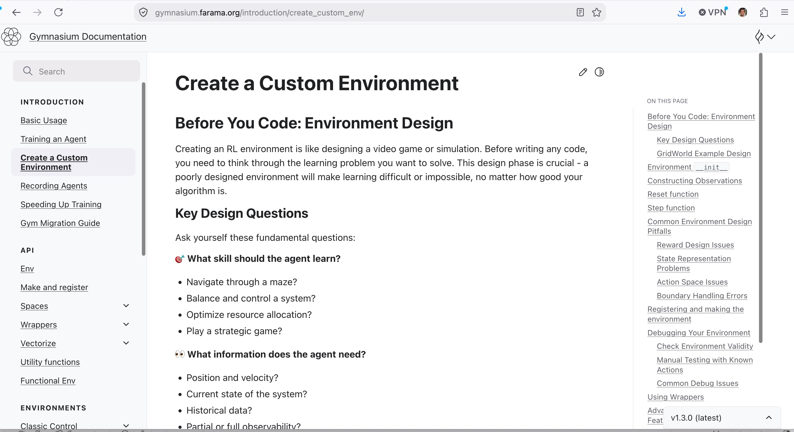
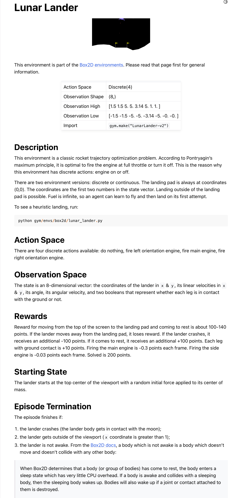

Lecture 2: The Gymnasium Environments
Introduction to Reinforcement Learning with Gymnasium
Gymnasium
About gymnasium
Gymnasiumis an open source Python library for developing and comparingreinforcement learningalgorithms- It provides a standard API to communicate between the learning algorithms and environments.
- It also provides a standard set of environments compliant with that API.
Gymnasiumdocumentation website is located https://gymnasium.farama.org.Gymnasium’s official developer site is https://github.com/Farama-Foundation/Gymnasium.
Why Gymnasium?
- Whether you want to train an agent to play games, control robots, or optimize trading strategies, Gymnasium gives you the tools to build and test your ideas.
- At its heart, Gymnasium provides an API (application programming interface) for all single agent reinforcement learning environments, with implementations of common environments: cartpole, pendulum, mountain-car, mujoco, atari, and more.
- At the core of Gymnasium is
Env, a high-level python class representing a markov decision process (MDP). - The class provides users the ability to start new episodes, take actions and visualize the agent’s current state.
Gymnasium environment categories
- Classic Control
- Box2D
- ToyText
- MuJuCo
- Atari
- External environments
- Create your own!
Atari Gymnasium environment
Atari Gymnasium environments
- A set of Atari 2600 environment simulated through Stella and the Arcade Learning Environment.
- Atari environments are simulated via the Arcade Learning Environment (ALE).
- Official documentation available at https://ale.farama.org/environments/
- List of Atari 2600 games: https://en.wikipedia.org/wiki/List_of_Atari_2600_games
- Just in case you are looking for ROMs to revisit past http://www.atarimania.com/rom_collection_archive_atari_2600_roms.html
MuJoCo Gymnasium environments
MuJoCo Gymnasium environments
- MuJoCo stands for Multi-Joint dynamics with Contact.
- It is a physics engine for faciliatating research and development in robotics, biomechanics, graphics and animation, and other areas where fast and accurate simulation is needed.
- The unique dependencies for this set of environments can be installed via:
pip install gymnasium[mujoco]
Toy Text Gymnasium environments
Toy Text Gymnasium environments
- All toy text environments were created using native Python libraries such as StringIO.
- These environments are designed to be extremely simple, with small discrete state and action spaces, and hence easy to learn.
- As a result, they are suitable for debugging implementations of reinforcement learning algorithms.
Classic Control Gymnasium environments
Classic Control Gymnasium environments
- The unique dependencies for this set of environments can be installed via:
pip install gymnasium[classic-control]. - There are five classic control environments:
Acrobot,CartPole,Mountain Car,Continuous Mountain Car, andPendulum. - All of these environments are stochastic in terms of their initial state, within a given range.
- In addition,
Acrobothas noise applied to the taken action. - Also, regarding the both
mountain carenvironments, the cars are under powered to climb the mountain, so it takes some effort to reach the top. - Among
gymnasiumenvironments, this set of environments can be considered as easier ones to solve by apolicy.
Box2D Gymnasium environments
Box2D Gymnasium environments
- These environments all involve toy games based around physics control, using box2d based physics and PyGame based rendering.
- These environments were contributed back in the early days of Gym by Oleg Klimov, and have become popular toy benchmarks ever since.
- All environments are highly configurable via arguments specified in each environment’s documentation.
- The unique dependencies for this set of environments can be installed via:
pip install swigpip install gymnasium[box2d]
External third party Gymnasium environments
- Gymnasium also hosts a good number of third party environments. For example,
- Autonomous driving environments:
- BlueSky-Gym: Reinforcement Learning Environments for Air Traffic Applications
- gym-electric-motor: Gym environments for electric motor simulations
- racecar_gym: Miniature racecar env using PyBullet
- sumo-rl: Reinforcement Learning using SUMO traffic simulator
- Biological / Medical environments:
- ICU-Sepsis: A Benchmark MDP Built from Real Medical Data
- Cybersecurity environments:
- Security-Gym
- Economic / Financial environments:
- gym-anytrading: Financial trading environments for FOREX and STOCKS
- gym-mtsim: Financial trading for MetaTrader 5 platform
- gym-trading-env: Trading Environment
- Electrical / Energy environments:
- EV2Gym: A Realistic EV-V2G-Gym Simulator for EV Smart Charging
- Autonomous driving environments:
- …
- and many more
- Detailed list can be obtained https://gymnasium.farama.org/environments/third_party_environments/
Create your own Gymnasium environments

Create your own Gymnasium environments
- If you are interested to construct a gym environment yourself and behave the same way as all other gym environments, OpenAI gym allows you to do that too with ease
- Here is a short tutorial that you can follow https://gymnasium.farama.org/introduction/create_custom_env/
Alright! A little less conversation, a little more action please!!
Basic Installation of gymnasium library
pip install gymnasiumThis does not include dependencies for all families of environments (there’s a massive number, and some can be problematic to install on certain systems). You can install these dependencies for one family like
pip install gymnasium[atari]or use the following to install all dependencies.:pip install gymnasium[all]- However, installing all is strongly discouraged. Please read the documentation of your preferred environment for the install directions.
If the above pip install throws a bash/zsh error, it might be the subscripts not allowed there. You need to set option for that.
setopt no_nomatch- Then run the command again.
The installs
- Make sure you install the following packages to go be able to codes shown in this module.
The Imports
Listing available gymnasium environments
expand for full code
CartPole-v0
CartPole-v1
MountainCar-v0
MountainCarContinuous-v0
Pendulum-v1
Acrobot-v1
phys2d/CartPole-v0
phys2d/CartPole-v1
phys2d/Pendulum-v0
LunarLander-v3
LunarLanderContinuous-v3
BipedalWalker-v3
BipedalWalkerHardcore-v3
CarRacing-v3
Blackjack-v1
FrozenLake-v1
FrozenLake8x8-v1
CliffWalking-v1
CliffWalkingSlippery-v1
Taxi-v4
tabular/Blackjack-v0
tabular/CliffWalking-v0
Reacher-v2
Reacher-v4
Reacher-v5
Pusher-v2
Pusher-v4
Pusher-v5
InvertedPendulum-v2
InvertedPendulum-v4
InvertedPendulum-v5
InvertedDoublePendulum-v2
InvertedDoublePendulum-v4
InvertedDoublePendulum-v5
HalfCheetah-v2
HalfCheetah-v3
HalfCheetah-v4
HalfCheetah-v5
Hopper-v2
Hopper-v3
Hopper-v4
Hopper-v5
Swimmer-v2
Swimmer-v3
Swimmer-v4
Swimmer-v5
Walker2d-v2
Walker2d-v3
Walker2d-v4
Walker2d-v5
Ant-v2
Ant-v3
Ant-v4
Ant-v5
Humanoid-v2
Humanoid-v3
Humanoid-v4
Humanoid-v5
HumanoidStandup-v2
HumanoidStandup-v4
HumanoidStandup-v5
GymV21Environment-v0
GymV26Environment-v0
Total number of environments in gymnasium (v: 1.3.0) = 63Interacting with the Environment
Gym implements the classic “agent-environment loop”:

Image courtesy: gymnasium.farama.org
The goal of the RL agent
The agent performs some
actionsin the environment (usually by passing some control inputs to the environment, e.g. torque inputs of motors) and observes how theenvironment’s statechanges. One such action-observation exchange is referred to as atimestep.The goal in Reinforcement Learning (RL) is to manipulate the
environmentin some specific way.For instance, we want the agent to navigate a robot to a specific point in space.
- If it succeeds in doing this (or makes some progress towards that goal), it will receive a
positive rewardalongside the observation for thistimestep. - The reward may also be negative or 0, if the agent did not yet succeed (or did not make any progress).
- The agent will then be trained to maximize the reward it accumulates over many timesteps.
- After some timesteps, the environment may enter a terminal state.
- For instance, the robot may have crashed! In that case, we want to
reset the environmentto a new initial state. The environment issues a done signal to the agent if it enters such a terminal state. - Not all done signals must be triggered by a “catastrophic failure”: Sometimes we also want to issue a done signal after a fixed number of timesteps, or if the agent has succeeded in completing some task in the environment.
- For instance, the robot may have crashed! In that case, we want to
- If it succeeds in doing this (or makes some progress towards that goal), it will receive a
Agent-Environment loop in Gymnasium
- Here below is an example of agent-environment loop in
gymnasium:LunarLander-v3
LunarLander-v3
- Reference https://gymnasium.farama.org/environments/box2d/lunar_lander/

Prereq installs first
Now, let’s see the code with LunarLander-v3
expand for full code
#$ python ./lunarlanderv3.py
import gymnasium as gym
from tqdm import tqdm
#number of timesteps
n = 500
#Since we pass render_mode="human", you should see a window pop up rendering the environment.
env = gym.make("LunarLander-v3", render_mode="human")
env.action_space.seed(42)
observation, info = env.reset(seed=42)
for _ in tqdm(range(n)):
action = env.action_space.sample()
observation, reward, terminated, truncated, info = env.step(action)
if terminated or truncated:
observation, info = env.reset()
#break
env.close()Demo of how to run LunarLander-v3
Action space and Observation (i.e., state) space
- Every environment specifies the format of valid actions by providing an
env.action_spaceattribute. - Similarly, the format of valid observations is specified by
env.observation_space. - In the example above we sampled random actions via
env.action_space.sample(). - Note that we need to seed the action space separately from the environment to ensure reproducible samples.